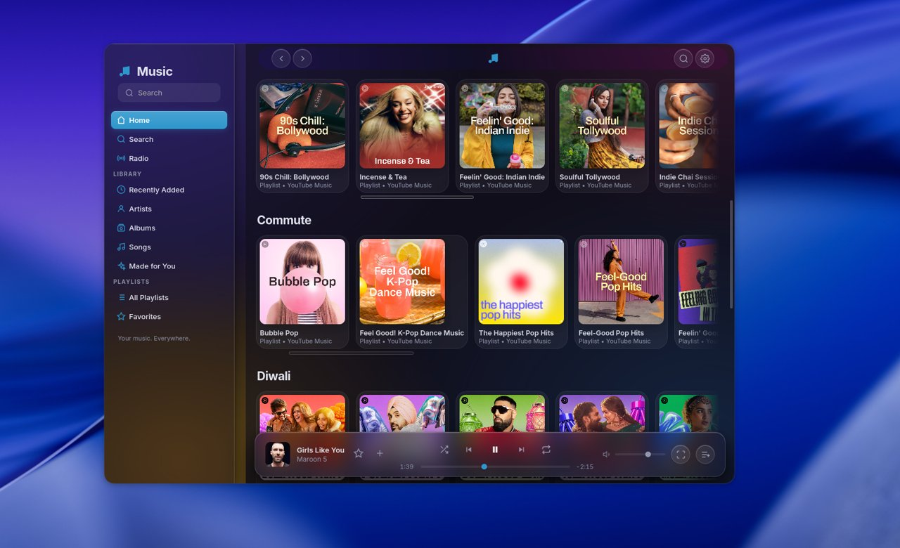
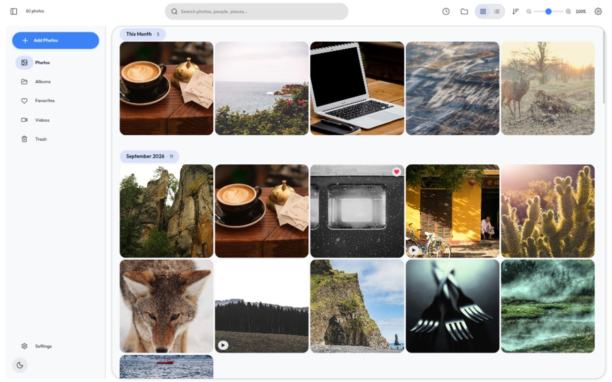
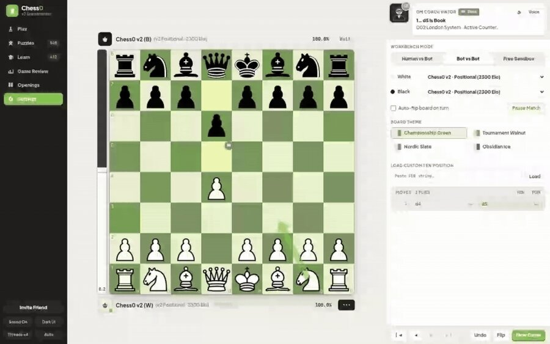
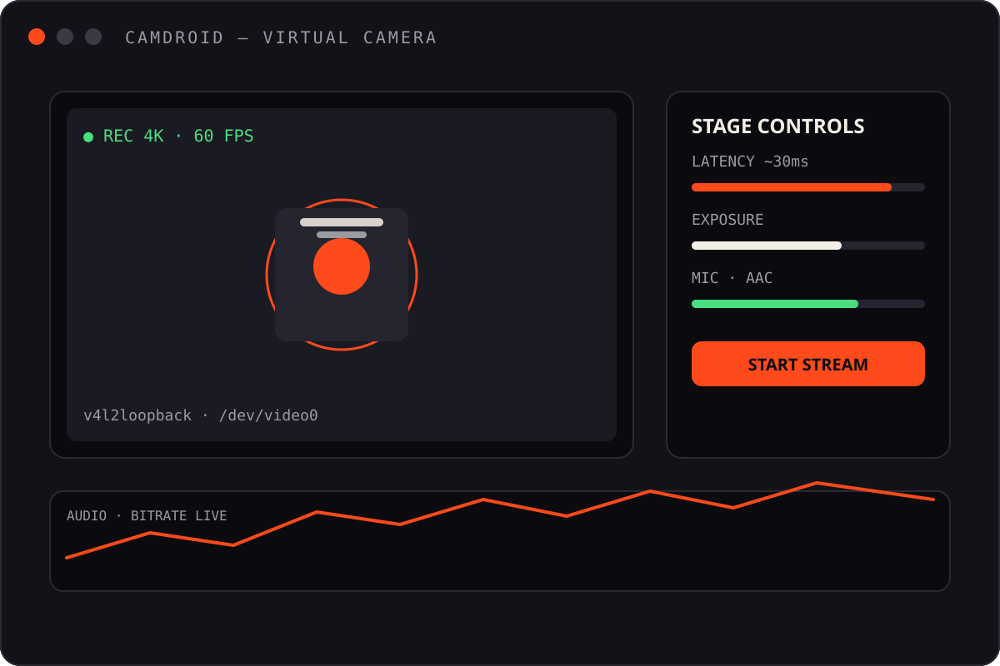

Most software is bloated, ad-filled or ugly. So I started building the opposite — fast, native, beautiful tools that respect the person using them.
12
Projects in the catalogue
I'm Aryan, 17. I make native tools, music players, galleries & engines — mostly in Rust, Kotlin, Python & TypeScript. Twelve original projects, each filed below with its own sheet. ← that's the short version

that's me, probably ↑

latest print — ’26
§ 1 — The catalogue
Pull one out. Each card opens a full spec sheet with screenshots and — where a release exists — tear-off download slips.
Online music streaming for Musico — InnerTube search + yt-dlp playback, on every platform you own.
shipped ✓ 02An attempt at a good native Linux gallery app — beautiful UI, advanced editing, zero bloat.
03A chess engine written 100% from scratch in TypeScript — playing in your browser at over a million nodes per second.
shipped ✓ 04Turn your Android device into a high-performance, ultra-low-latency virtual webcam & microphone for Linux.
shipped ✓ 05My own music player for Linux — because all that exist are trash UI and not good for me.
shipped ✓ 06Connect the free 15GB+ you get with each Google account into one place.
07A free digital library of thousands of books — Project Gutenberg + Internet Archive, displayed beautifully.
08A zero-key, free & open-source intelligence workbench. Five specialist modules, no paid API keys, no accounts.
09An X-ray for your codebase — complexity, churn risk & health metrics as a self-contained HTML report.
10A private, exactly-two-people app for couples — the couple app that can't betray its users.
11A digital brain that fetches data from your conversations and processes it locally to build connections and improve context.
12NetSentry — a real-time, Dockerized network traffic & anomaly sniffer with a cyberpunk live dashboard.
Musico, online — InnerTube + yt-dlp, on every platform you own.

A native-feel Linux gallery with a LightCraft editing engine.

A chess engine from scratch, at 1M+ nodes a second, in your browser.

Your Android, reborn as a 4K webcam for Linux. ~30ms latency.
§ 2 — Journal
Field notes, unedited. Seventeen, from India, learning to build amazing stuff — in public, one repo at a time.
Most software is bloated, ad-filled or ugly. So I started building the opposite — fast, native, beautiful tools that respect the person using them.
A music player, because the existing ones felt like trash. A gallery, because Linux deserved better. An OSINT workbench that costs nothing to run.
← everything here started as an itchTwelve originals later, the rule hasn't changed: ship it, then polish it. This catalogue is the receipt.
Apps that feel at home on the OS — not web wrappers with extra steps.
No paywalls, no accounts, no dark patterns. Public data, public code.
If it isn't delightful, it isn't finished.
Versioned releases you can actually download — not just a repo.
§ 3 — On the shelf
Languages across the twelve cards. Rust leads — systems work is where the fun is.